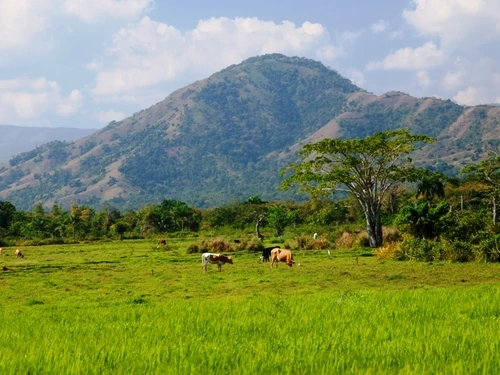

Aquifer Characterization and Vulnerability Mapping for the Plaine du Nord-Massacre Aquifer in Haiti

Affiliation: USAID Fragile Waters
Completion: November 2024
I was engaged by the USAID Fragile Waters activity to support USAID/Haiti in developing evidence-based toolkits to facilitate adaptive and concerted management of shared national and transboundary water resources. I collaborated with Northwater Consulting, USAID Eau, and USAID Fragile Waters leadership to develop a StoryMap that visualizes the connectivity of the watershed, rivers, and the aquifer, including outlining primary basins, recharge, and aquifer thickness. We additionally present high-resolution projections of population growth and water demand at the third administrative level to model future dependence on the aquifer by 2050 and inform tailored and localized management strategies. Finally, we outline emerging threats to the aquifer, including saltwater intrusion, climate change, contamination, and politicization of the Massacre River. The StoryMap was presented at the 2024 UNC Water & Health Conference in coordination with key Haitian government stakeholders, including DINEPA, INARHy, and State University of Haiti's Center for Water Resilience.